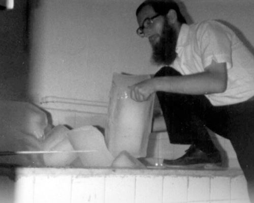
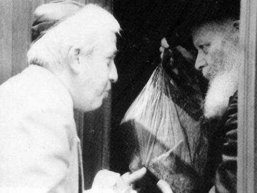

Lebanon War, 1982: The Rebbe Paid to Renovate the Mikva in Lebanon
The tanks boomed while combat planes zoomed, one after another, towards the terrorists’ holdout and annihilated them. Thousands of snipers dispersed to various points in order to eliminate enemy targets; only the Lubavitchers drove around the Arab city Bhamdoun in Lebanon. They wondered how they cou

BEARDED MEN LOOKING FOR ICE
Thirty years have passed since the morning when hundreds of thousands of readers opened their Maariv, the Tisha B’Av issue 5742/1982. They were amazed to read that in the heart of Lebanon, in the midst of a fierce war, Lubavitcher Chassidim had built a mikva for the local Jews. This is how the article, written by Naftali Krauss, a Lubavitcher Chassid who worked for years as a journalist at Maariv, began:
A small truck with three bearded Jews drove around eastern Beirut last week. They were looking for ice! Many blocks of ice that would melt into 800 liters of water. The bearded men looking for ice in the capitol of Lebanon were Lubavitchers from Tzfas led by R’ Levi Bistritzky. They needed ice in order to fix the mikva in Bhamdoun, as per the request of a handful of Jews who live there.
He went on to describe the pitiful situation of the local Jews who wanted to observe mitzvos but were unable to:
Chabad Chassidim met two Jewish brothers, local residents, who are strictly observant. They complained that not only did they not have kosher meat, but the local mikva was not operable.
The news item concluded with the great success they had after much effort:
After making efforts, they found the necessary ice in eastern Beirut and the mikva was made kosher.
SHMA YISROEL IN LEBANON
R’ Baruch Marzel of Chevron, someone who is utterly devoted to the territorial integrity of Eretz Yisroel, has a special knack for helping Jews who live in Arab areas. Thirty years ago, he had the merit of setting into motion a complicated operation on behalf of Jews living then in Lebanon, which entailed building a mikva in Bhamdoun in the midst of the Lebanon War.
With the outbreak of war, Marzel was sent to the front. Whenever there were breaks in the fighting, he and his fellow soldiers walked around the streets of Lebanon. One day, he wanted to replace a camera of his that had broken during the fighting. He went to an electronics store in the hopes of being able to buy a camera and then quickly rejoin his buddies.
He entered the store and saw a man behind the counter who looked like a local, but when the man noticed him, he began shouting the Shma. Marzel couldn’t get over it since he hadn’t met any Jews in Lebanon up until that point. They had heard that there were a few Jews and here was one of them! The storeowner hurried to pull down the shutters over the doors and when they remained alone, he whispered to Marzel that he was a Jew and his name was Eliyahu Luzia. When Baruch asked him in surprise why he did not move to Eretz Yisroel, Eliyahu said that he had elderly grandparents whom he could not abandon.
Eliyahu told him about the unfortunate state of Jewish life in the city after the PLO turned the shul into its military base and wreaked havoc there.
“However, our main problem is not the shul but the mikva which was the only one in Bhamdoun and became unusable due to the heavy shelling with the outbreak of hostilities.” In a voice choked with tears, he asked Marzel to do something so that they would have a working mikva.
Marzel could not fulfill Eliyahu’s request on his own and he asked the military chaplaincy for help. He received their immediate response which was that they could not help, but Marzel did not give up.
A few days later, as he traveled in a military tank, he encountered a mitzva tank in the main square of the town. On the tank were Lubavitcher Chassidim from Tzfas who had come to print the Tanya. He motioned to them to stop and told them about the mikva and how the Jews did not have a working mikva.
The Lubavitchers went with him to the Luzia family and were amazed to see their host davening with tallis and t’fillin. Someone took a picture and it was later sent to the Rebbe. Eliyahu Luzia was religious and ran a successful business. It was his success that delayed his making aliya. He was in touch with Chabad in France and to the surprise of the guests, he showed them Talks and Tales in French that they sent to him.
They heard from him that which they needed to know about fixing the mikva and they said they would return to Tzfas and find out how they could help.
When they returned to Tzfas on Friday, they immediately relayed to the rav of the community, R’ Levi Bistritzky a”h, the request of the Jews from Bhamdoun. They asked the rav to join them on Sunday morning on another trip to the town, in order to examine the mikva. R’ Bistritsky asked for the Rebbe’s bracha for this unusual trip and after a short wait, the Rebbe’s positive answer arrived along with a bracha.
R’ Bistritzky joined the Tankistin on the trip to Bhamdoun. When they arrived at the location of the mikva, he was taken aback at the destruction. He wrote down the repairs that were needed in order to restore the mikva to working order. Renovating the building was not a problem. The main problem was how to fill the mikva.
AN ORDER FOR 200 BLOCKS OF ICE
The group of Lubavitchers led by R’ Bistritzky returned to Tzfas and prepared for the following Sunday when they would repair the mikva. The question still remained – how were they to fill the mikva, especially in the summer? R’ Bistritzky came up with an idea that is used in situations such as these – to fill the reservoir with blocks of ice. But these needed to be made ready in advance. A call had to be made to Lebanon, but obviously, this wasn’t possible.
R’ Bistritzky found a solution to this too. He called his mother living in the United States and she called an Arab who lived in Beirut who sold blocks of ice. She ordered 200 blocks of ice and told him that a group of Jews would arrive to pick them up. Needless to say, to locate an Arab who sold ice – in the summer no less! – was quite a project.
THE REBBE’S INVOLVEMENT
It was renovation day. A delegation of Lubavitchers from Tzfas went to Lebanon together with the Tankistin, along with R’ Yitzchok Yehuda Yaroslavsky, secretary of the Beis Din Rabbanei Chabad who had joined them in order to help find halachic solutions for any problems they encountered.
Wherever they went they saw scenes of devastation. The delegation traveled through abandoned streets with destroyed homes, burned out tanks, and highways riddled with holes from shells. After a long drive, they finally met the Arab with the blocks of ice who waited for them at an agreed upon location. The problem was that he had only two blocks of ice! He explained that a woman had called him and said she needed 200 blocks of ice and he assumed she didn’t know what she was talking about because that was an enormous quantity and nobody orders so much ice. So he had brought two blocks, hoping to see in the reaction of the buyers that his assumption had been correct.
R’ Bistritzky explained that yes, they needed 200 blocks of ice and within a short time, the Chassidim had the amount they needed. Excitement ran high – the rebuilding of the mikva in Lebanon was becoming a reality! But they still had the complicated task of transporting the ice. All members of the delegation were pressed into service. The first one stood near the vehicle with the ice and the last ones on line, including R’ Bistritzky, R’ Yaroslavsky, and R’ Avrohom Goldberg, stood near the reservoir. Then, assembly line fashion, they transferred the blocks from one person to the next until it was placed in the reservoir.
When the final blocks of ice were placed in the reservoir, they danced merrily. Shortly thereafter, they returned to Eretz Yisroel.
R’ Bistritzky returned a week later to check the mikva after the ice had melted. He affirmed that all was well from both a technical as well as a halachic standpoint.
Now that the work was completed, they reported to the Rebbe. The Rebbe asked, “Does the mikva have a heater?” Naturally, within a short time, a heater was provided for the mikva. The Rebbe asked how much the renovation had cost and then sent the entire sum! A short while later pictures were sent of the mikva. The Rebbe examined them and then returned them to R’ Bistritzky.
The Tanya was printed in Bhamdoun, and the Chassidim gave copies of it to Eli Luzia, along with other Jewish books, and encouraged him to stay strong in his Jewish observance.
TICKETS FROM THE REBBE
While the Chassidim worked on the mikva and on printing the Tanya, Eli Luzia and his wife asked the IDF to help them visit Eretz Yisroel for Tishrei 5743 where their son, Benzion, would celebrate his bar mitzva. It had not been possible in previous years, but now, with the IDF’s takeover of the area in which they lived, it was a rare opportunity for them.
Fulfilling their request was no simple matter. Even when they finally arrived at the border of Eretz Yisroel, there were various delays and only the intervention of Prime Minister Begin enabled them to enter the country.
At the bar mitzva celebration, which was celebrated with great pomp at a hall in the center of Yerushalayim, were the Chassidim from Tzfas who had visited his home in Lebanon several times. They astonished the family when they announced that, as per the request of the Rebbe’s secretariat, tickets had been purchased for the family to New York so they could join the Rebbe for Sukkos and Simchas Torah.
They flew on Chol HaMoed together with R’ Bistritzky. Their first encounter with the Rebbe was on Hoshana Raba, when Eli and his wife stood on the long line of people outside the Rebbe’s sukka. They waited to receive lekach from the Rebbe. Eli had a valuable gift with him and when it was his turn, he took out a wine bottle, a silver plate and a special goblet. The Rebbe accepted the gifts and blessed them. Then he spoke in French, a more familiar language to the couple.
They told the Rebbe that they would soon be returning to their home in Lebanon and they requested a bracha. The Rebbe firmly stated that they should not return, even for a short time. They were shocked by this and tried to explain that they had not taken their possessions and had not sold their home, but the Rebbe insisted that they not return to Lebanon.
Eli then told the Rebbe that his wife suffered terribly and the doctors recommended an operation after which she would not be able to have more children. The Rebbe negated the idea of an operation and told her she would yet give birth.
Eli and his wife are not Chassidim and they had just been told “no” about two major issues in their life. They did not know what to do. They had to decide whether to listen to the Rebbe. A few days passed and when they returned to Eretz Yisroel they heard the news that terrorists had taken control of Bhamdoun and massacred all the Christians who lived there. Now, he and his wife understood that if they had gone home, even for a short time, it would have been a terrible decision.
A few months passed and upon visiting a doctor, Mrs. Luzia was told she was expecting a baby. This was a pleasant shock since her previous birth was over thirteen years earlier. A few more months went by and she gave birth to a healthy daughter.
LUBAVITCHERS DISCOVER A JEW IN THE PHALANGE MILITIA

The Jew from Bhamdoun receiving lekach on Hoshana Rabba 5743
Two weeks after readers read the article in Maariv quoted at the beginning of this article, they read another interesting item about Chabad in Bhamdoun. This is what Menachem Rahat wrote:
A resident of Bhamdoun, which is on the Beirut-Damascus highway, who has been serving in the militia of the Phalanges (a Lebanese Christian political group under Gemayal who cooperated with the IDF) for four years now, was discovered by Chabad to be a religious Jew who wears tzitzis.
Samu Hagi, 21 years old, was on duty on the Beirut-Damascus highway when he noticed a Chabad mitzva tank that had come to the Phalangist blockade. In his halting Hebrew, he asked the bearded Chassidim to explain what their vehicle, with the picture of the Lubavitcher Rebbe, was for.
After they explained their purpose, he told them that he himself was a religious Jew who lived in Bhamdoun. To prove this to them, he lifted his shirt and displayed his tzitzis. The Phalangist soldier also told them that he tries to keep Taryag mitzvos to the best of his ability. Every so often he organizes a minyan on Shabbos in the shul.
Samu invited the Lubavitchers to his home and introduced them to his parents and brothers who are also religious. In the moving encounter, the Jewish hosts in Bhamdoun wanted to hear about Jewish life in Eretz Yisroel and asked for help in realizing their dream of praying at the Kosel.
Shneur Zalman Berger. "Lebanon War, 1982: The Rebbe Paid to Renovate the Mikva in Lebanon." Beis Moshiach, no. 843 (July 27, 2012).